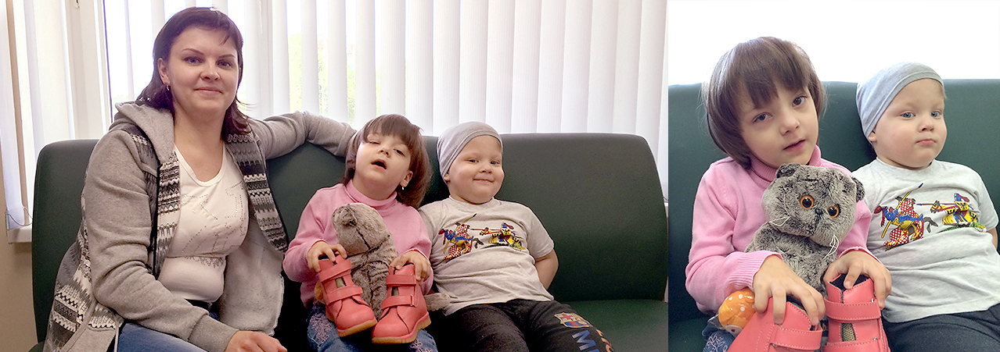

Вике Абрамовой скоро исполнится 5. Она родилась со спастической диплегией
одно из форм ДЦП, при которой особенно страдают ноги. Вика не стоит и не ходит. Всю ее маленькую жизнь мама носит ее на руках.
Врачи говорят, что положительные сдвиги возможны, но нужны уколы, гипсование и реабилитация ЛФК, бассейн, массаж.
Вика второй ребенок в семье, у нее есть сестра-двойняшка Лера и маленький брат Матвей. Папа ушел из семьи два года назад, не выдержав стресса. Мама Тамара одна растит троих детей, поддерживает отношения с поликлиниками и социальной защитой и находит в себе силы радоваться даже небольшой помощи.
«Нас поддерживают другие люди, но не государство. Тем, кто стоит у власти, это не нужно, у них нет ни физических, ни материальных сил нас курировать. А вот обычных людей, добрых и отзывчивых, очень много.»
Тама, мама Вики
